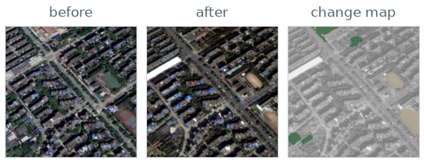

Single-stage vs two-stage semantic change detection
Twelve semantic change detection systems on the SECOND benchmark, compared under equal training compute.
Projects in machine learning and computer vision.

Twelve semantic change detection systems on the SECOND benchmark, compared under equal training compute.